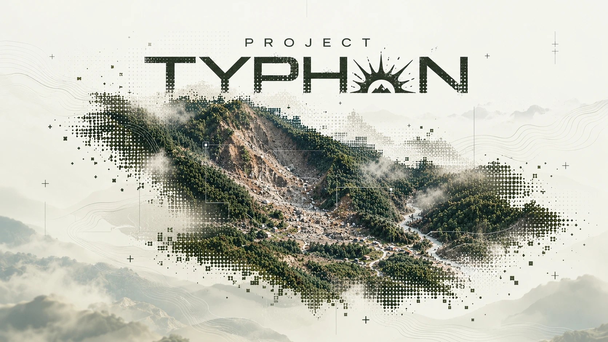

T8.2Project Typhon · team Vortex · hackFront India 2026
Rapid drone mapping
for disaster relief.
From one drone flight, on one laptop, with no internet: which roads each vehicle can use, who is cut off, and what to clear first.

01The problem
A landslide closes a valley. Every map you have is from before.
SATThe satellite pass is days away, and may be under cloud.
WEBOnline maps still show the roads as they were.
VIDDrone video is not a map: nobody can plan a route from footage.
02What Typhon does
From one flight to the relief plan.
03Judging criterion 1 · positional error
±6.06m
at 3 surveyed checkpoints, with no ground control.
One straight line34.2 m
Block of lines6.1 m
Same camera, same pipeline: the flight pattern alone takes the error from 34.2 m to 6.1 m.
04Heights
Heights: trust the ground nearby.
+43m
Absolute heights read high: the cameras' consumer GPS altitude. Not usable.
±1.1m
Heights relative to nearby ground, checked at 326 surveyed points. Volume, pile height and span banks use these.
05Judging criterion 2 · time for a stated area
13.14 ha in 80.2 min on one laptop.
| Run (248 photos) | Area | Time | Error | Peak memory |
|---|
| First look | 10.63 ha | 50.3 min | ±8.40 m | — |
| Default map | 13.14 ha | 80.2 min | ±6.06 m | 8.77 GB |
| Earlier quick run (31 Oct) | 12.94 ha | 145.6 min | ±6.09 m | 8.61 GB |
| With height models | 13.19 ha | 171.4 min | — | 11.0 GB |
While the drone flies, a rough map grows: each photo on it about 1.2 s after it arrives (idle laptop, Test 7f).
06Judging criterion 3 · output an agency can use
Opens in the tools they already use.
GeoPackage for QGIS and ArcGIS
KMZ for Google Earth
Cloud-optimised GeoTIFF, GeoJSON, A3 PDF map
0 of 128 page requests left the laptop
07The decision Simulated scenario on real Wayanad roads
Who can get through, per vehicle.
People cut off, of 205 in 11 groups:
Ambulance148
Fire truck146
Jeep94
On foot55
08Road status per vehicle Simulated
Each blockage lets a different vehicle through.
Debris across the road
Covers the road edge to edge.
Fire truckAmbulanceJeepOn foot
Road narrowed by debris
About 2.4 m left clear.
Fire truckAmbulanceJeepOn foot
Damaged bridge
Cracked deck: on foot, one at a time.
Fire truckAmbulanceJeepOn foot
Water over the road
About 0.5 m of fast water.
Fire truckAmbulanceJeepOn foot
09The route graph, live
Two engines, one answer.
10When the ground changes Simulated
A field report redraws the plan.
Clearing the damaged bridge: people cut off for a jeep go from 94 to 55.
Phones on the laptop's hotspot report a road in a tap; the dashboard picks it up in about 3 s.
11Fly next
Blurred photos? Fly it again.
Roads the photos could not show stay unknown until a clear pass shows them. One click plans a re-fly of the patch.
| Passes | 14 |
| Distance | 6.9 km |
| Flight | about 19 min |
| Photos | 578 |
12Said plainly
What we have, and what we don't.
Accuracy rests on 3 checkpoints on public USGS data; the standard asks for 30.
The map's demo is simulated; our own flights had no landslide.
The debris model finds about a quarter of debris on new landslide images, and little on our road crops: it only raises "needs checking".
Vehicle limits and priority weights are placeholders until sourced.
Security: 8 attacks, each with a passing test; the independent scan is still PENDING.
13Next
A service first, then a product.
NOWWorking prototype: public survey data, simulated scenario, our own test flights.
NEXTOur own survey with 30 checkpoints, then a field trial with a district emergency operations centre.
COSTA gaming laptop and a consumer drone: about ₹1.5–2.6 lakh (estimate, current listings).
14Business plan · who it is for
The district decides. The state pays.
| First | Then | Later |
|---|
| Institution | District emergency operations centre | SDRF, NDRF, fire services | Public Works Department, Border Roads |
| User | Duty officer sending the vehicles | Field team leader with a phone | Engineer planning clearance and bridging |
| Who pays | State Disaster Management Authority | The same budget | The road owner's budget |
First customer to test: Rudraprayag district, Uttarakhand, ranked highest in India for landslide exposure.
15Business plan · competition
The closest tool stops at the map.
| Who | What it gives | Price (public listing) | Where it stops |
|---|
| PIX4Dreact | Offline 2D map on a laptop, no ground control | US$990 a year | No road status per vehicle, no route graph, no field reports; tuned for mostly flat ground |
| DroneDeploy | Cloud drone mapping | US$329–599 per user a year | Needs internet to process |
| Satellite maps | ISRO/NRSC, Copernicus damage maps | Free to agencies | Days away, under cloud, too coarse for one road |
| Typhon | Offline map plus decisions: cut off, clear first, fly next | ₹1.5 lakh a year (proposed) | A prototype: error checked at 3 checkpoints so far |
Indian drone firms such as ideaForge and Garuda Aerospace fly drones for responders: possible partners, not rivals.
16Business plan · model and market
₹1.5lakh
a year per district: the software, updates, training for the centre and its field teams, and one mock drill a year.
Proposed price, to test with a buyer
FUND10% of the states' disaster funds is set aside for preparedness: about ₹3,200 crore a year (estimate).
FIRST147 districts ranked for landslide exposure × ₹1.5 lakh = ₹2.2 crore a year, 0.07% of that fund.
ONCEA laptop and a consumer drone, bought at cost: about ₹1.5–2.6 lakh (estimate).
LATEROn-call mapping per event, road owners, insurers and mining (planned, not tested).
17Business plan · first 100 users
One district, one drill, then ten.
Said plainly: the problem is in the reports. The buyer and the price are still hypotheses; calls with three people in the segment come first.